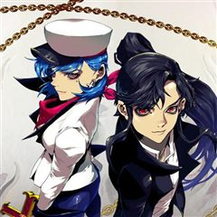

카카오웹툰 추천 인기 순위 TOP 30
카카오웹툰에서 지금 연재 중인 작품을 카카오웹툰 공식 인기 순위 순서로 모았어요. 네이버웹툰·카카오웹툰·레진코믹스에서 조건에 맞는 작품 944개 중 인기 순으로 30개를 골랐어요. 인기 TOP 3: 무한의 마법사, 막내가 뭔갈 많이 숨김, 천광명월
2026-10-14 기준 · 성인 작품 제외
내 취향으로 더 좁혀서 추천받기 →-
1
 카카오웹툰
카카오웹툰무한의 마법사
마굿간에 버려져 평민으로 키워진 아이, 시로네. 타고난 통찰력으로 글까지 깨우친 아이는 도시로 나간 어느 날 그토록 궁금해하던 마법을 경험한다. 그 길로 마법사를 꿈꾸게 된 시로네. 하지만 신분의 장벽이 두터운 이 곳은 아이에게 냉혹하고, 그는 채 어른이 되기도 전에 이 세상의 이면을…
미스터리학원물성장물카카오웹툰에서 보기 → -
2
 카카오웹툰
카카오웹툰막내가 뭔갈 많이 숨김
마법사 소년병으로 개고생하던 전쟁터에서 전생의 기억이 떠올랐다. 그리고 이곳이 <폐허 위에 꽂은 검> 소설 속이라는 것도. 하필이면 종말의 몰살엔딩이 예정된 전쟁 소설 속에 빙의했냐고!! 끔찍한 결말을 피하자면 ‘영웅’ 레비아탄 제베르트 옆에 딱 붙어 그가 죽지 않도록 잘 감시해야 한…
힐링로판육아물카카오웹툰에서 보기 → -
3

-
4
 카카오웹툰
카카오웹툰군림천하
"너만은 꼭 군림천하 해야 한다!” 그 한마디로 진산월의 운명이 결정됐다. 스물세 살, 그는 종남파의 장문인이 되었다. 남은 이들은 단 8명의 제자뿐. 한때 천하제일을 꿈꿨지만, 지금은 명맥만을 잇는 문파. 사부의 유지를 위해, 살아남기 위해— 진산월은 비정한 강호로 나아간다.
자극적인성장물액션카카오웹툰에서 보기 → -
5
 카카오웹툰
카카오웹툰템빨
[신영우 (유저 네임: 그리드)] 세계 최고의 가상 현실 게임 <SATISFY>. 현실에서나, 게임 속에서나, 불운은 항상 그의 곁을 맴도는데.... 퀘스트 수행 중 우연히 발견한 게임 속 로또, '파그마의 기서'. 20억 명이 넘는 유저 중 유일한 최강의 레전드리 직업으로 전직. "…
사이다학원물게임판타지카카오웹툰에서 보기 → -
6
 카카오웹툰
카카오웹툰잊혀진 들판
- 난 매일 기도해 이 사랑이 죽기를 오늘까지만 너를 사랑하고 내일은 이 사랑이 죽어 있기를 - 불륜으로 태어난 비운의 황녀, 탈리아 로엠 귀르타. 그녀는 무관심한 부모와 적대적인 이복형제들, 그리고 자신을 경멸하는 하인들 틈에서 일그러진 채 자란다. 다가오는 모든 이들에게 가시를 곤…
자극적인눈물샘자극로판카카오웹툰에서 보기 → -
7
 카카오웹툰
카카오웹툰수린당 성군전
[수린당 성군전] 선계와 인간계를 이을 단 한 명의 성군, ‘한울’. 지덕체를 두루 갖춘 완벽한 아이의 탄생에 선계의 신들은 신이 났다. 그것도 아주 지나치게! 과도한 기대는 때론 독이 될 수도 있는 법. 한울이를 금쪽이가 되지 않게 밝고 바른 아이로 키울 수 있을까? 성군의 운명을…
힐링카카오웹툰에서 보기 → -
8
 카카오웹툰
카카오웹툰회귀검가의 서자가 사는 법
강자존의 가문 라그나르의 서자 테오, 죽도록 노력했지만 재능이 부족하여 혈통의 사슬을 끊지 못하고 결국 왕좌경쟁에 밀려난다. 하지만 힘없는 서자 임에도 형제들은 테오를 제거하려 하였고 자신을 가르쳤던 스승에게 마저 배신당한 테오는 모든걸 잃어버리고 죽음을 맞는다. 최후의 순간, 삶의…
사이다학원물회귀카카오웹툰에서 보기 → -
9
 카카오웹툰
카카오웹툰남궁세가 손녀딸의 귀환
혈마의 소교주 일화는 스승인 혈마의 뜻에 따라 남궁세가를 멸문시키지만, 혈마의 배신으로 인해 죽음을 앞두고 충격적인 이야기를 듣는다. “이제 천하에 남궁은 너 하나 남았다.” 일화는 자신이 남궁세가에서 오래전에 잃어버린 아이 ‘설화’였고, 간악한 혈마의 수작질을 위해 키워졌단 걸 알게…
로판회귀카카오웹툰에서 보기 → -
10
 카카오웹툰
카카오웹툰이계 검왕 생존기
『귀하는 적합자로 선택받았습니다』 『귀하의 재능으로 셀하 라트나에서 생존할 확률은 5% 미만입니다』 『자살하시겠습니까? Y/N』 “x-까.” 5% 미만의 생존 확률. 22년의 시간. 셀 수도 없는 마견과의 사투. 이 지옥에서, 나는 홀로 살아남았다. 5라는 레벨 뒤에 감춰진, 무지막지…
개그학원물게임판타지카카오웹툰에서 보기 → -
11
 카카오웹툰
카카오웹툰너에게 빼앗을 왕관
내 평생을 바쳐 사랑한 사람. 그러나 사랑이라 믿었던 것은 배신이었고, 왕이었던 오라비는 나의 무지로 인해 죽었으며, 조국은 소리 없이 처참히 무너졌다. “다시… 돌아왔어.” 하지만 이번 생은 다를 것이다. 숙부에게 주어졌던 영광은 전부 빛을 잃을 것이며, 남편이 바랐던 찬란한 왕관은…
로판복수극카카오웹툰에서 보기 → -
12
 카카오웹툰
카카오웹툰흑막 남주의 시한부 유모입니다
내가 쓴 소설로 많은 사람들의 인생이 어그러졌다. 이대로 가면 클로드는 크롬벨 제국을 무너뜨릴 최종 흑막으로 자랄 것이다. 하나뿐인 친구이자, 소설 속에서 비극적인 삶을 살게 된 디엘린에게 한 목숨 같은 약속. “클로드 곁은 내가 지킬게.” 클로드를 바르게 키우기 위해 에단을 좋은 아…
로판육아물카카오웹툰에서 보기 → -
13
 카카오웹툰
카카오웹툰픽 미 업!
그 누구도 던전의 끝까지 오르지 못한 극악의 난이도를 자랑하는 모바일 가챠 게임 <픽 미 업!(Pick me up!)> 마스터 오브 마스터라 불리는 세계 랭킹 5위의 마스터 '로키'는 던전을 깨던 중 정신을 잃게 된다. 깨어나 보니 레벨도 1, 등급도 1성인 <픽 미 업!> 속 영웅…
사이다액션게임판타지카카오웹툰에서 보기 → -
14
 카카오웹툰
카카오웹툰임신한 척했는데 남편이 돌아왔다
아버지의 죽음으로 하루아침에 빚쟁이 남작이 되어버린 유디트. 자신이 전생에 읽었던 소설 속에서 환생했다는 걸 깨달았다. 소설의 전개를 이용해 빚을 갚아 나가기로 한 유디트는 실종된 아들의 가짜 아내가 필요한 공작저에 계약직 며느리로 들어간다. 빚도 갚고, 평생 못 누릴 호사도 누리고.…
로판환생카카오웹툰에서 보기 → -
15
 카카오웹툰
카카오웹툰해골병사는 던전을 지키지 못했다
나는 ‘해골병사’. 주인인 서큐버스님을 용사로부터 지키지 못하고 그저 하찮게 부서져 버린 일개 몬스터. 그렇게 죽음을 맞이하는 줄 알았다. 그러나 정신을 차려보니, 20년 전 사령술사에 의해 눈을 뜬 그 날로 돌아왔다. ‘띠링!’ 남들에게는 보이지 않는 상태창과 함께, 죽어도 죽어도…
미스터리서스펜스학원물게임판타지카카오웹툰에서 보기 → -
16
 카카오웹툰
카카오웹툰악녀라서 편하고 좋은데요?
"악녀라서 뭐? 편하고 좋기만 한데?" 2020년 카카오페이지 올해의 웹소설 <악녀라서 편하고 좋은데요?> 웹툰으로 화려하게 다시 태어나다! 은수저X, 금수저X :+: 오리하르콘 수저 :+: 악녀로 빙의한 윤도희 180,000,000도 인생 역전에 성공한다. 소심한 본체 그렇지 못한…
사이다로판빙의카카오웹툰에서 보기 → -
17
 카카오웹툰
카카오웹툰검술명가 막내아들
진 룬칸델 대륙 최고의 검술명가, 룬칸델의 막내아들 룬칸델 역사상 최악의 둔재 비참하게 쫓겨나 허무한 최후를 맞이한 그에게 다시 한 번 기회가 주어졌다. “너는 이 힘을 어떻게 사용하고 싶더냐?” “저를 위해 사용하고 싶습니다.” 전생의 기억과 압도적인 재능, 그리고 신과의 계약 최강…
액션회귀카카오웹툰에서 보기 → -
18
 카카오웹툰
카카오웹툰관존 이강진
미친놈인가? 아니면 흔한 관심종자인가? 사람의 다름을 이해 못 하는 제자 이강진. 그리고 그걸 이해시켜주고자 하는 스승 곽노. 두 사제師弟의 따뜻한 휴먼스토리.
액션성장물카카오웹툰에서 보기 → -
19
 카카오웹툰
카카오웹툰낭선기환담
호랑이로 환생하여, 영물이 되어 살아가던 산의 주인 산군. 평화롭게 살아가던 산군의 앞에 한 소녀가 찾아오게 된다. 대뜸 지아비로 모시겠다고 하는 소녀. 귀찮은 산군은 그녀를 내쫓으려고 하지만, 그녀는 돌아갈 곳이 없다. 결국 소녀를 거두기로 결심한 산군. 그런 그에게 수많은 위협이…
액션환생카카오웹툰에서 보기 → -
20
 카카오웹툰
카카오웹툰이번 생은 가주가 되겠습니다
“…한번 해 보자. 내가 가주가 되는 거야.” 제국에서 제일가는 가문, 롬바르디의 사생아로 환생한 피렌티아. 게다가 이 가문은 막대한 부는 물론 외교와 문화까지 통달한 말그대로 제국의 역사 자체! 금수저 오브 금수저 인생 당첨! 앞으로는 탄탄대로일 거라 생각했는데…. 아버지는 돌아가시…
사이다로판회귀카카오웹툰에서 보기 → -
21
 카카오웹툰
카카오웹툰악당 가문의 상속녀입니다
소설 속 엑스트라로 환생한 지 10년차. 날 거둬 키워주신 집 주인 할아버지가 돌아가신 날, 악명 높은 공작 가문 '블라스코'에서 찾아왔다. "선대 공작 각하께서 카티샤 양께 모든 유산을 상속하셨습니다." "선대 공작 각하···?" 그니까 할아버지가 '블라스코' 공작 각하였다구요?!…
로판육아물카카오웹툰에서 보기 → -
22
 카카오웹툰
카카오웹툰인소의 법칙
인터넷 소설 읽기가 취미였던 평범한 학생 함단이. 어느 날 자고 일어나니 옆집에는 아주 예쁜 여학생 반여령이, 학교에는 그 이름도 무시무시한 사대천왕이 나타났다! 하루아침에 소설처럼 뒤바뀐 세계, 그리고 함단이의 역할은 다름 아닌 여주인공 소꿉친구 중 하나. [인터넷 소설의 법칙!]…
차원이동카카오웹툰에서 보기 → -
23
 카카오웹툰
카카오웹툰적룡무제
압도적인 무력으로 천하무림을 일통한 무림의 절대지존 무제(武帝), 이환. 천수를 다하고 영면에 들었으나, 버림받은 황자의 몸으로 깨어나고 만다. 게다가 그의 모든 것이었던 대야성은 멸망하고 역사에서도 철저하게 지워진 뒤인데… “되돌려 놓으면 그뿐.” 잃었던 모든 걸 되찾고, 천하에 군…
사이다액션빙의카카오웹툰에서 보기 → -
24
 카카오웹툰
카카오웹툰여보, 나 파업할게요
2회차 결혼 생활, 돌연 파업 선언?! 결혼 생활 10년 동안 무뚝뚝하고 전쟁밖에 모르던 남편 제스터 옆에서 고생만 하다 불치병으로 죽은 카시아. 하지만 눈을 떠보니 10년 전 결혼 후 첫 날로 돌아와 있었다. 어차피 불치병으로 죽을 몸, 카시아는 이번 생엔 아무것도 안 하고 놀고 먹…
설렘폭발공감로판로맨틱코미디카카오웹툰에서 보기 → -
25
 카카오웹툰
카카오웹툰철혈검가 사냥개의 회귀
바스커빌 가문의 사냥개 '비키르'. 사냥개로서 가문에 충성한 보답은 모함과 누명으로 얼룩진 단두대의 칼날이었다. "다시는 토끼를 잡고 나면 삶아지는 사냥개처럼 살지 않겠노라." 그런 그에게 죽음 대신 찾아온 뜻밖의 기회. 어둠 속에서 송곳니를 갈고닦는 비키르의 눈이 붉게 빛났다. "기…
학원물복수극카카오웹툰에서 보기 → -
26
 카카오웹툰
카카오웹툰천하제일인의 소꿉친구
정파를 배신하고 천마 휘하의 마인이 되어 버린 구양천. 마인으로서 살아가며 천마의 명으로 본인의 의지와는 상관없이 수많은 악행을 저지르고 후회로 점철된 인생을 살아가게 된다. 천마가 일으킨 정마대전. 정파의 삼존 존재마저 무릎을 꿇린 천마를 베어낸 위설아로 인해 길고 길었던 지옥 같은…
액션하렘카카오웹툰에서 보기 → -
27
 카카오웹툰
카카오웹툰네크로맨서 학교의 소환천재
네크로맨서 진영과 프리스트 진영의 '100년 전쟁' 이후. 힘의 구도를 뒤바꿀 역대급 인재가 태어났다. 무엇을 상상하던 그 이상의 잠재력. 아버지의 언데드 군단을 손에 넣고, 대륙을 양분하는 위대한 네크로맨서 학교 '키젠'에 입학한다. 엘리트들 사이에 있어도 천재는 천재. 새로운 케이…
학원물성장물카카오웹툰에서 보기 → -
28

카카오웹툰블랙 베히모스
태초에 세 명의 신이 있었다. 땅의 베히모스, 바다의 레비야탄, 하늘의 즈가. 그러나 베히모스와 레비야탄은 서로를 증오하였고 사투 끝에 둘다 죽게 된다. 이를 지켜본 즈가가 눈물을 흘렸고, 그 눈물이 탈리스라는 신비한 힘을 가진 광석이 공존하는 세상을 탄생시킨다. 이 탈리스를 두고 분…
학원물성장물카카오웹툰에서 보기 → -
29
 카카오웹툰
카카오웹툰이상한데 효과적인 악녀 생활
제국의 최고 명문 프렐라이 공작가의 막내 손녀이자 천재 마법 공학 박사인 키아나 프렐라이. 콩가루 집안에서 가출한 후 촌구석 상아탑에 처박혀 논문 찍는 기계처럼 연구에 매진한 지 7년. 갑자기 들이닥친 군사들에 의해 제국으로 끌려갔다. 아니, 할아버지가 역모를 꾀했다고?!!! 교수형…
개그로판회귀카카오웹툰에서 보기 → -
30
 카카오웹툰
카카오웹툰재앙급 영웅님이 귀환하셨다
지상에 최강의 영웅이 있었다. “하지만 죽었잖아. 우리가 죽인 놈이 어떻게 돌아와?” “그러게. 돌아올 수 있으면 한번 돌아와 보라지.” 그런데 20년 만에 진짜 돌아와 버렸다? “뭘 그리 놀래? 왜. 양심에 찔릴 짓이라도 하셨나?” 이 XX들. 가만 안 둔다.
사이다학원물복수극카카오웹툰에서 보기 →